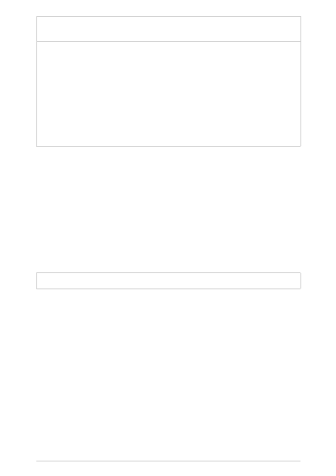

System
message
User
Assistant
You are an AI
assistant that
helps people
find information.
You will read a paragraph, and then issue queries
to a search engine in order to fact-check it. Also
explain the queries.
---
PARAGRAPH
John Smith is married to Lucy Smith. They have
five kids, and he works as a software engineer at
Microsoft. What search queries should I do to
fact-check this?
---
QUERIES
1. "John Smith Microsoft"
- To check if John Smith
is indeed employed at
Microsoft.
2. "John Smith Lucy
Smith" - To check if John
Smith is married to Lucy
Smith.
3. "John Smith children" -
To check if John Smith
has five children.
If you're not sure what syntax to use, consider using Markdown or XML. The models
have been trained on a lot of web content in XML and Markdown which may provide
better results.
Large language models (LLMs) often perform better if the task is broken down into
smaller steps. For example, in the search query prompt referenced earlier, the prompt
can be restructured so that the model is first instructed to extract relevant facts, and
then instructed to generate search queries that can be used to verify those facts.
System message
User
Assistant
Break the task down